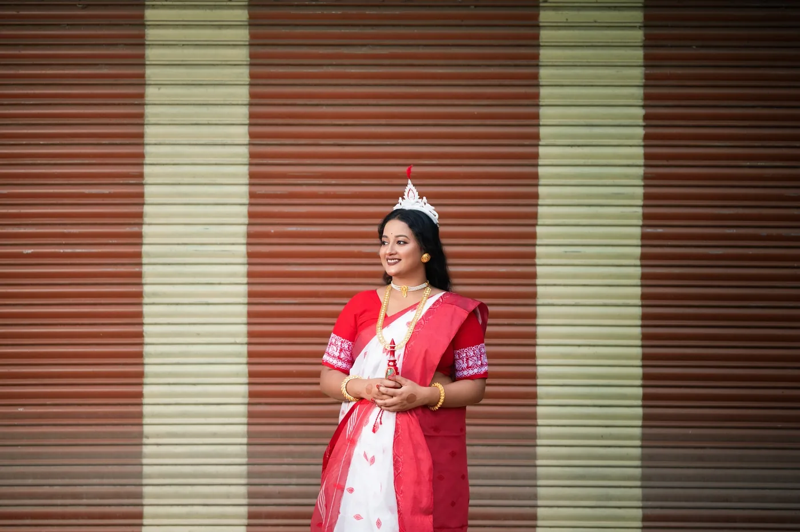

01
THE BEGINNING
Getting ready, details, family anticipation and the little in-between moments.
A wedding is more than a schedule. It is the glance before a ritual, the laughter between families, the quiet after the music. We turn those fleeting moments into photographs and films you can return to.

From getting ready to the final farewell, we document the rhythm of your celebration with a balance of observation, direction and cinematic detail.
Getting ready, details, family anticipation and the little in-between moments.
Rituals, expressions, entrances, vows and the people who make them meaningful.
Energy, colour, movement, portraits and the moments no one planned.
A considered collection of photographs and films designed to live beyond the day.
Clear deliverables, deliberate direction and a visual language that stays coherent from first frame to final output.
Unscripted emotions, gestures and interactions captured without interrupting the day.
Story-led wedding films with a visual rhythm built around your people and place.
Editorial portraits that still feel like you—relaxed, intentional and beautifully lit.
The textures, heirlooms, hands, décor and traditions that make your celebration yours.
These frames are drawn from the work shared for this website concept and are arranged here as a compact visual sample.


A few practical answers. We can shape the scope around your event, shoot or campaign.
Yes. Coverage can combine documentary-style candid photography with directed portraits and important traditional moments.
Yes. The Reflection offers photography and cinematography as a coordinated visual storytelling service.
Travel requirements can be discussed during the enquiry so the coverage plan reflects the wedding location and schedule.
Share the date, location and idea. We will take it from there in WhatsApp.
Tell us what you are planning, when it is happening and what you need. Your enquiry will open in WhatsApp with the details already filled in.